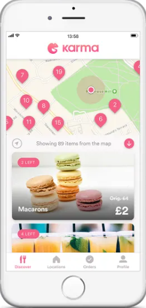
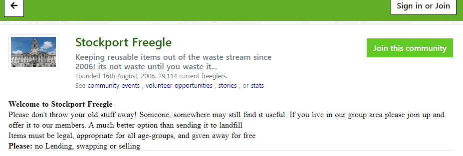
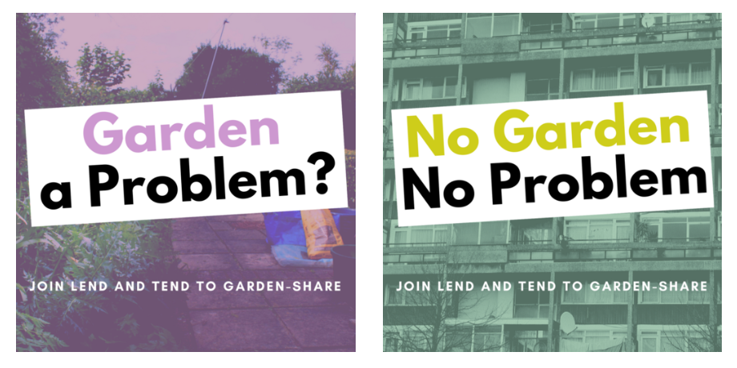

Use Nature For Good
use nature for goods goal is to use nature to show you that the ecosystem is worth protecting in hopes that people change to sustainable day to day choices.some ways that people may be able to acheive these goals could be with some of these suggestions we have.
Best Food Waste Apps
the first way people could make a change for sustainable living is to use a food waste app to manage eating without waste. the apps check for the most ethical growers and delive the perfect amount of food to not waste any at the end of the day. if you dont like how automated the process is for this you could get an app that tells you the nearby ethical growers and tell you what to look at. there are even some apps for more specific things like guides for the most sustainable fish to eat ranging from resturants to visit to recipies to try.

https://www.vogue.co.uk/gallery/best-food-waste-appsFreegle
another way people are being sustainable is making local groups one freegle and giving old stuff you dont need to other people so you dont need to bin it ,this is overall a much better alternative to sending old stuff you have to a landfill the things they may include in this are anything legal and can be anything from car magazines to matresses, you can even request things to see if anyone dosnt use it anymore and wants to give it to you.

https://www.ilovefreegle.org/explore/StockportFreegleLendAndTend
if you want to help the ecosystem but you think you cant because you dont have a garden then you can go to the website lend and tend and see if anyone who dosnt know how to garden wants people to go grow thing in their garden or even if you like gardening and cant due to injuries you can show people how to garden on this website.if you dont know how to garden but have a garden and want things growing there are 1000's of gardeners waiting for allotments to garden so all you have to do is let them garden in yours instead win win for both of you.

https://www.lendandtend.com/